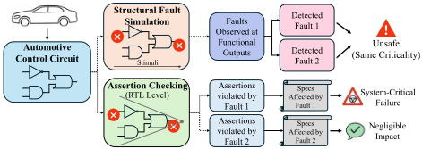
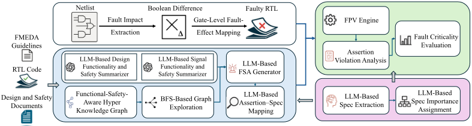
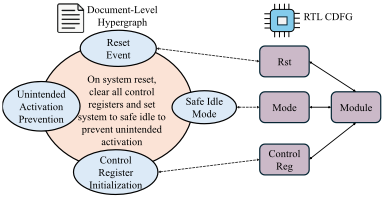
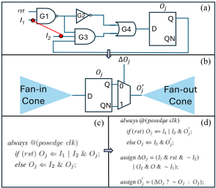
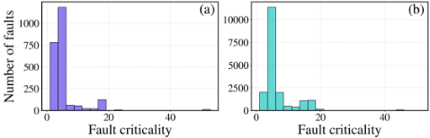

Safegen: LLM-Driven Assertion Generation and Fault Criticality Evaluation for Functional Safety
SafeGen：面向功能安全的 LLM 驱动断言生成与故障关键性评估
简介
论文针对汽车芯片功能安全评估中传统故障分析过于保守的问题：模块级按故障能否传播到输出做 safe/unsafe 二分类，导致大量实际无害故障被标记为 unsafe，带来冗余设计与测试开销。SafeGen 用 LLM 结合融合 FMEDA 指南的文档级 Hyper Knowledge Graph 从设计与安全文档中抽取可验证规范并评估其重要性，再将 HyperKG 与 RTL CDFG 对齐，自动生成与规范关联、可追溯的 Functional Safety Assertions；通过支持 stuck-at 与 bridging 故障的 gate-to-RTL 故障映射，把门级故障效应映射到 RTL，用 FPV 找出被违反的断言，并按所违反规范的重要性对故障分级。在 FOC 电机控制设计的数字-物理协同仿真平台上验证：断言质量优于 AssertLLM 与 AssertionForge；相对功能级故障仿真参考，检出 80.6% 的 stuck-at 与 82.6% 的 bridging 故障，而结构仿真误报了 34351 个 stuck-at 与 3894 个 bridging 故障；总运行时间 3.7 天，优于故障仿真的 5.5 天。
问题
传统基于仿真的故障分析在模块级采用二分类（故障效应能否传播到至少一个功能输出），过于保守悲观，导致冗余设计、性能损失和测试开销增加；基于功能激励的故障仿真难以从功能语义角度做多级故障分类，且在系统集成前不可行；人工编写高质量断言耗时且难以扩展，模板化断言生成又难以捕捉高层语义与设计意图的上下文依赖。论文目标是实现细粒度、可追溯、可解释的故障关键性评估。
方法
SafeGen 是 LLM 驱动、形式验证辅助的框架：(1) 用 HyperGraphRAG 构建文档级 HyperKG（实体含 ports、FSM、safe states、safety levels，超边表达多实体关系），从 FMEDA 指南、安全文档与设计文档中经 RAG 抽取规范，采用 N=15 次独立推理+嵌入余弦相似度聚类+最高置信度选择保证一致性，重要性评分经 M=30 轮独立打分取中位数；(2) 用 PyVerilog 提取 RTL CDFG，经模糊字符串匹配与文档 HyperKG 对齐，按信号（含模块内部信号）以 BFS 上下文+多 LLM 摘要生成 FSA，并用 LLM 建立断言与规范的一对多映射实现语义可追溯；(3) 将 [34] 的 gate-to-RTL 故障映射从 stuck-at 扩展到 bridging 故障（wired-AND/OR、dominant），通过布尔差分与 MUX 建模把门级故障效应注入 RTL；(4) 用 Cadence JasperGold 做 FPV，按被违反断言所关联规范的重要性（0-4 分）给故障定级。
关键结果
断言质量评估（JasperGold 统计 #SVA/#SynC/#Proven 及 COI 覆盖）中 SafeGen 优于 AssertLLM 与 AssertionForge，消融实验显示去除 HyperKG 后性能明显下降
规范抽取 15 次独立运行聚类为 4 簇（大小 10/2/2/1），主簇收敛并产出 70 条最终规范；重要性评分 30 轮取中位数后所有标准差低于 1
相对作为 ground truth 的功能级故障仿真，SafeGen 检出 80.6% 的 stuck-at 故障和 82.6% 的 bridging 故障
结构故障仿真检测到的故障中有 34351 个 stuck-at 和 3894 个 bridging 故障在功能仿真中未造成任何系统错误，证明结构仿真过于悲观
运行时间：SafeGen 总计 3.7 天（HyperKG 构建 2 分钟、规范抽取与评分 20 分钟、断言生成 12.5 小时、gate-to-RTL 故障映射 6.7 小时、FPV 故障评估 3.1 天），优于故障仿真的 5.5 天（不含人工 testbench 准备时间）
高关键性故障主要集中于 reset 正确性、PI 数值饱和与控制运算相关逻辑，多数故障呈低关键性，实现 needle in the haystack 筛选
创新点
相对已有工作的区别：(1) 相比 AssertLLM、AssertionForge 等 LLM 断言生成框架，引入功能安全感知的 HyperKG（超边表达 FSM、协议、数据通路等多实体联合关系），并覆盖模块内部 registers/wires 而非仅端口信号；(2) 相比基于结构可观测性的形式化故障识别，通过断言-规范映射实现语义级、可追溯的故障关键性多级分级，而非 safe/unsafe 二分类；(3) 将已有 gate-to-RTL 故障映射方法从 stuck-at 扩展到 bridging 故障，在控制 COI 膨胀、维持 FPV 收敛的同时弥合门级故障分析与高层功能语义间的抽象鸿沟。
团队参考意义
相关度级别：high
命中能力域：2.4 设计验证方法学 | 2.5 形式验证与等效性检查 | 2.7 EDA/验证自动化与 AI 辅助
理由：论文核心技术直接命中团队三个能力域：LLM+知识图谱自动生成 SVA 与断言-spec 可追溯映射属于 2.7 的 AI 辅助验证自动化；以 JasperGold FPV 评估故障、控制 COI 保证收敛属于 2.5 的形式 property checking；故障注入、故障关键性分级与故障仿真基线对比属于 2.4 的验证方法学。虽然论文应用场景是汽车功能安全（ISO 26262/FOC 电机控制）而非团队的存储/互连 IP 产品线，但团队核心价值包含沉淀可复用方法学与自动化能力，LLM 断言生成、文档-RTL 语义对齐、FPV 收敛性处理均可迁移到 LPDDR/HBM4/UCIe IP 的验证流程中。
建议动作：深入精读并做内部分享
中文全文
arXiv:2606.25296v1 [cs.AR] 2026年6月24日
SafeGen: LLM-Driven Assertion Generation and Fault Criticality Evaluation for Functional Safety
Xuanyi Tan 1 , Arjun Chaudhuri 1 , Rubin Parekhji 2 , Krishnendu Chakrabarty 1
1 亚利桑那州立大学，美国亚利桑那州坦佩
2 德州仪器印度公司，印度卡纳塔克邦班加罗尔
{xtan58,Krishnendu.Chakrabarty}@asu.edu,arjuniitkgp7@gmail.com,parekhji@ti.com
仍被标记为不安全，从而触发与真正关键节点相同的安全强化措施。这种保守策略会导致冗余设计、性能损失和测试开销增加。因此，仅基于可观测性来评估故障关键性是不充分的，这一点将在第 4.5.2 节中进一步讨论。一种有效的策略是借助一个能够从功能语义角度解释故障效应的框架，根据故障的功能影响在多个层次上评估其重要性。
基于功能输入激励的传统故障仿真方法无法有效地从功能语义角度进行多层次故障分类 [4, 6]。这是因为输入激励很少能明确映射到电路功能，而建立此类映射需要大量人工工作，使得该过程对于大型设计而言不切实际。相比之下，功能安全断言（FSA）天然地编码了功能语义。FSA 是旨在验证设计在故障条件下的鲁棒性与行为完整性的断言。其目的在于识别导致功能失效的故障，从而为故障分类提供客观依据。这些断言通过形式化属性验证（FPV）进行评估，FPV 无需依赖仿真激励即可探索所有可达的设计状态。图 1 展示了故障仿真与 FPV 在故障关键性评估方面的区别。通过分析故障注入后的断言违例，并根据相关联规范的重要性对其进行加权，能够以更细的粒度评估故障。
开发高质量断言需要人工解读规范、识别与安全相关的行为，并将其形式化为精确的属性。对于复杂设计而言，这一过程耗时且难以扩展 [11]。基于模板或规则驱动的断言生成框架可以实现这一过程的自动化，但它们难以捕捉高层语义以及设计意图与功能行为之间的上下文依赖关系 [21, 31]。大语言模型（LLMs）的最新进展为应对这一挑战提供了新的机遇。凭借强大的语义推理能力，LLMs 能够联合分析设计文档与寄存器传输级（RTL）代码，以提取设计意图和功能语义，从而自动生成有意义的 SystemVerilog 断言（SVAs）。近期工作已经证明了 LLMs 在生成通用断言和信息安全相关断言方面的有效性，减少了人工投入并提升了覆盖率 [5, 7, 26, 33, 35, 36, 39, 42]。例如，AssertionForge 构建了基于知识图谱的上下文检索，以捕捉规范与 RTL 之间的依赖关系，进一步提升了断言生成中的语义准确性 [7, 23]。
本文提出 SafeGen，这是一种故障关键性评估框架，它将 LLMs 的语义推理与形式属性验证（FPV）相结合，实现细粒度、可追溯且可解释的故障关键性评估。LLMs 利用文档级超知识图谱（HyperKG）从安全文档和设计文档中提取可验证的规范，同时评估其对系统安全的重要性。在 SafeGen 中，HyperKG 通过 RTL 控制数据流得到扩展
Abstract
随着自动驾驶与电动汽车技术的发展，功能安全已成为汽车芯片设计中的关键需求。传统的基于仿真的故障分析在模块级往往过于保守，无法反映真实的故障关键性。本文提出 SafeGen，这是一种由大语言模型（LLM）驱动、形式验证辅助的面向功能安全的故障关键性评估框架。SafeGen 采用大语言模型（LLMs）与融合了失效模式、影响与诊断分析（FMEDA）准则的文档级超知识图谱（HyperKG），从设计文档和安全文档中提取可验证的规范，并评估其对整体系统安全的重要性。随后，HyperKG 通过寄存器传输级（RTL）信息得到扩展，以指导生成语义有据且设计感知的功能安全断言（FSA），每条断言均与其对应规范相链接，从而实现可追溯的推理。一种支持固定型故障与桥接故障的门级到 RTL 故障映射机制，结合形式属性验证（FPV），能够基于与规范关联的断言违例实现语义层面的故障关键性分级。针对磁场定向控制（FOC）系统的数字-物理协同仿真平台对 SafeGen 进行了验证，结果表明其断言质量优于其他基于 LLM 的断言生成框架。与传统的基于仿真的方法相比，该框架还在故障关键性评估中提供了语义可解释性。
1 Introduction
自动驾驶与电动汽车技术的日益普及不断提升车载电子系统的复杂度。确保系统在故障条件下安全运行是一项艰巨的挑战。ISO 26262 等标准为硬件故障的检测与管理定义了统一的框架，其主要目标是确保系统即使在存在故障的情况下也能维持安全的运行状态 [2, 30, 32]。在左移（shift-left）范式下，尽早识别故障影响有助于及时采取设计阶段的应对措施，从而提升系统可靠性 [24]。为此，需要采用故障仿真与形式化方法来评估故障能否传播至功能输出，进而评估其引发安全风险的潜在可能。这些方法将故障关键性视为一个二分类问题，根据故障的影响能否传播到至少一个功能输出，将故障判定为安全或不安全 [8-10]。
在系统层级，二分类的故障判定是合理的，因为在系统输出处可观测到的故障通常意味着功能安全遭到违反 [8]。然而，当应用于模块层级时，这种方法会变得过于悲观。由于模块在失效模式与功能角色上各不相同，相似的故障传播模式在不同情境下可能导致不同的风险 [16, 17]。例如，辅助计数器中的某个故障可能在特定输入激励下传播到输出，但对主控制回路影响甚微。在二分类方案下，此类故障是控制数据流图（CDFG）以指导 FSA 生成，使大语言模型（LLM）能够捕获全局安全语义与功能语义及其与寄存器传输级（RTL）结构的对应关系。生成的断言与所提取的规范相链接，以实现语义可追溯性。门级到 RTL 的故障映射用于在 RTL 层级分析门级故障效应，同时支持固定型故障与桥接故障。形式属性验证（FPV）通过识别断言违例来评估所注入的故障。在建立断言与规范之间的映射后，即可根据受影响规范的重要程度为每个故障赋予关键性。所提出的框架在一个磁场定向控制（FOC）设计 [41] 上进行了验证，验证采用了我们自行开发的数字-物理协同仿真平台以及定制的功能安全文档。该验证流程证明了所提出框架在真实安全关键场景中的有效性。所提出的方法弥合了底层故障分析与高层功能语义之间的抽象鸿沟，在属性与门级故障之间建立了直接对应关系。

本文的主要贡献如下：
2.1 Fault Simulation
基于仿真的故障分析已被广泛用于故障关键性评估，但其存在二分类局限和高计算成本的问题 [10]。为提高效率，近期的工作采用在故障仿真数据上训练的神经网络 [12-15, 22, 37]。尽管这些方法能够实现快速推理，但它们依赖于仿真标签，且缺乏对功能语义的感知。
2.2 Formal Methods
现有的基于形式验证的故障识别技术侧重于结构层面的检测；其通过构建无故障机器与故障机器，并分析二者的输出差异来识别可观测故障 [9, 19, 20, 40, 43]。然而，这些方法仍局限于结构可观测性，无法捕捉故障对功能行为的语义影响，而后者对功能安全评估至关重要。直接在门级网表上执行形式验证可以实现精确的故障定位，但会增加验证复杂度。寄存器传输级（RTL）等高层抽象会被细化为大量逻辑门，从而显著扩大影响锥（COI），使形式验证引擎难以收敛 [18]。为缓解这一可扩展性问题，验证通常被提升至 RTL 抽象层级进行。然而，这一转换带来了新的挑战：门级故障的位置在 RTL 中往往缺乏一一对应的信号映射，导致精确的故障注入变得困难。在本工作中，门级故障的影响被映射到 RTL 信号上，并针对功能安全断言（FSA）进行验证，从而在控制 COI 扩展并保持收敛性的同时，实现具有语义意义的故障关键性评估。
2.3 LLM-Based Assertion Generation
基于大语言模型（LLM）的断言生成框架采用多 LLM 协作方式，将子任务分配给专门的 LLM [5, 7, 26, 33, 35, 36, 39, 42]。例如，AssertLLM 使用多个 LLM 来解析设计文档并生成 SystemVerilog 断言（SVA）[42]。AssertionForge 构建了一个统一的知识图谱（KG），将设计文档与 RTL 图集成起来以生成断言 [7]。然而，该方法仅针对模块级端口信号，而忽略了对功能安全至关重要的内部寄存器和连线。此外，其过于简单的 KG 表示限制了捕捉设计文档中多实体交互与上下文依赖的能力。
2.4 HyperKG
HyperGraphRAG [28] 解决了基于图的检索增强生成（Retrieval Augmented Generation, RAG）方法仅能建模二元关系的局限性。它引入了 HyperKG，其中超边捕捉多个实体之间的 n 元关系，实现统一的检索与生成，从而提升 LLM 的推理准确性。对于设计功能与安全文档而言，这种超图结构尤为适用，因为模块的安全行为往往取决于其内部组件（如状态机、通信协议和数据通路）之间的联合交互。通过将这些多实体关系表示为连接内部机制与相关信号的超边，超图使断言生成能够同时兼顾局部结构细节与全局功能和安全意图。在本工作中，我们利用一种功能安全感知的 HyperKG 来增强 LLM 生成 FSAs 的推理能力。
3.1 Overview
图 2 展示了多级故障关键性评估的框架。我们从设计文档中识别并提取规范说明，并评估其系统级重要性。随后，针对 RTL 信号自动生成 FSA，并将每个 FSA 与其对应的规范说明相关联，以建立语义可追溯性。接着，将门级故障效应映射到 RTL，并在含故障的 RTL 上执行形式化属性验证（FPV）以评估故障关键性。
SafeGen：面向功能安全的 LLM 驱动断言生成与故障关键性评估

3.2 LLM-Based Specification Extraction and Importance Assignment
由于故障关键性取决于受影响规范说明的重要性，因此大语言模型（LLM）生成的规范说明及其重要性评分的一致性、鲁棒性和可靠性对于确保评估结果可信至关重要。由于 LLM 响应存在固有的不确定性，尤其是对于 GPT-5 这类温度参数无法调节的推理模型，LLM 的单次响应可能并不可靠 [3]。我们采用一种系统化的预处理与后处理方法，引导 LLM 提取高质量、结构良好且重要性赋值稳定的规范说明，从而为故障关键性分析建立可信的语义基础。
3.2.1 文档级 HyperKG 构建。我们采用 HyperGraphRAG 作为一种预处理技术来降低 LLM 响应的不确定性。该技术的基础是我们的文档级 HyperKG，其构建始于基于 LLM 的实体与超边提取，提取来源包括失效模式、影响与诊断分析（FMEDA）指南、安全文档和设计文档。实体依据一个自定义模式进行定义和提取，该模式涵盖功能性、结构性以及与安全相关的概念，例如端口、有限状态机、安全状态和安全等级。超边则基于这些实体之间的关系自动识别，以捕捉它们在文档中的语义依赖关系。这一过程生成一个文档级超图。所有实体和超边均被嵌入到高维向量空间中，以便在检索增强生成（RAG）过程中支持用于规范说明提取和重要性评分的向量查询。此外，每个实体和超边都在属性字段中存储其文本描述，以便为 FSA 生成提供上下文信息。
3.2.2 规范说明提取。在规范说明提取过程中，我们采用文档级 HyperKG 来执行检索增强生成（RAG）。SafeGen 自动从安全文档和设计文档中提取所有可验证的功能、性能、接口和安全规范说明。提取过程被设计为一个可靠的大语言模型（LLM）推理流水线，以确保所生成规范说明的统计一致性与可信度。为约束模型行为，我们采用一种独立的多轮推理机制，即由 LLM 对相同的输入配置处理 𝑁 次。每次推理都会产生一个候选规范说明集 𝑆 𝑖 以及一个自评估的完整性置信度 𝐶 𝑖 ∈ [ 0 , 1 ]，该置信度反映模型认为其输出覆盖文档中所有相关规范说明的程度。候选结果被解析为标准格式，从而构成集合 {( 𝑆 𝑖 , 𝐶 𝑖 )}。随后应用嵌入模型来量化 𝑁 个生成集合之间的语义相似度。每个 𝑆 𝑖 被转换为高维向量表示，并计算余弦相似度矩阵 𝐷 𝑠。对相应的距离矩阵 𝐷 = 1 - 𝐷 𝑠 进行凝聚聚类（平均链接），以识别语义上最一致的簇。在该簇中，选取置信度 𝐶 𝑖 最高的样本作为最终规范说明集。
3.2.3 规范说明的重要性分配。在规范说明的重要性分配方面，我们的目标是通过利用断言验证局部功能行为的能力，并借助语义推理将这些局部属性映射到系统级功能与安全语义，从而定量评估每条规范说明对整体系统功能与安全的贡献。为获得稳定可靠的评估结果，我们采用一种统计聚合方法。在后处理阶段，LLM 在相同输入下执行 𝑀 轮独立评分，产生完整的分数集合 { 𝐼 𝑖,𝑗 }，其中 𝐼 𝑖,𝑗 表示第 𝑗 条规范说明在第 𝑖 次推理中的重要性分数。经过 𝑀 轮之后，每条规范说明 𝑗 的最终重要性分数被确定为其独立生成分数的中位数，即 ˜ 𝐼 𝑗 = median ( 𝐼 1 , 𝑗 , 𝐼 2 , 𝑗 , . . . , 𝐼 𝑀,𝑗 )。
3.3 FSA Generation
3.3.1 文档级 HyperKG 增强。为了将从文档中提取的安全与功能语义关联到 RTL 结构，并提升断言生成的质量，我们将文档级 HyperKG 与 RTL CDFG 合并，形成一个增强的 HyperKG。CDFG 使用 PyVerilog [38] 从 RTL 中提取，其节点和边通过存储在属性字段中的结构描述进行标注。随后，应用模糊字符串匹配 [7] 来对齐文档级超图与 RTL CDFG 之间语义相关的实体。匹配的节点被连接起来，构成一个统一的 HyperKG，将文档中的功能与安全语义同 RTL 设计的结构依赖关系关联起来。图 3 以复位控制逻辑为例，展示了文档级超图与 RTL CDFG 之间的对齐过程。文档指出，在系统复位时，所有控制寄存器必须被清零，且系统必须进入安全空闲状态。LLM 提取器识别出诸如复位事件、寄存器初始化、安全空闲模式以及非预期激活防范等关键实体，并将它们连接为一条表示其因果安全关系的超边。RTL 分析则定位到对应的节点，包括 rst、control_reg 和 mode 信号。随后，这些语义实体与结构节点通过模糊字符串匹配实现对齐。
3.3.2 上下文检索与增强。在 SafeGen 中，FSA 按信号逐一生成。在为给定信号生成断言之前，该框架从两个互补来源构建其上下文：基于 HyperKG 的图探索和多 LLM 摘要。对于 HyperKG 探索，从目标信号对应的节点出发，按照预定义的跳数限制 ℎ 执行广度优先搜索（BFS）。该搜索收集 ℎ 跳范围内的所有相邻节点及其关联的超边。从这些节点及其对应超边的属性中提取文本描述并进行聚合，以构建源自 HyperKG 的上下文。与此同时，多个基于 LLM 的摘要器从 FMEDA 指南、安全文档和设计文档中提取语义信息，生成关于设计级和信号级功能与安全意图的简洁描述。最后，将由 HyperKG 探索和 LLM 摘要获得的上下文组合起来，为 LLM 提供统一且语义丰富的上下文，随后 LLM 为每个信号生成相应的 FSA。

3.3.3 断言-规范映射。我们使用 LLM 来识别断言与规范之间的映射关系，其中单条断言可以与多条规范相关联。这种一对多的关系使得能够跨不同的功能与安全需求对故障影响进行全面的语义追踪。
3.4 Gate-Level Fault Effect Mapping to RTL
所提出的故障映射方法建立在 [34] 所提出方法的基础上，该方法计算布尔差分，并采用基于多路选择器的建模在 RTL 层级进行故障注入。然而，[34] 主要关注固定型故障（stuck-at fault），而功能安全评估还需要分析由物理耦合引起的桥接故障 [1, 25]。在本工作中，我们扩展上述映射方法以支持桥接故障分析。
典型的桥接故障包括线与（wired-AND）、线或（wired-OR）和支配型桥接故障（dominant bridging fault）。为了在 RTL 层级表示桥接故障效应，必须首先将抽象的桥接故障模型转换为逻辑等价的结构，并由此获得注入故障后的网表。对于线与（线或）故障，其实现方式是断开受害线（victim net）与攻击线（aggressor net），并将二者接入一个与门（或门），该门的输出驱动两条原始线的所有扇出节点。对于支配型桥接故障，受害线被断开，由攻击线直接驱动原本由受害线驱动的所有扇出节点。
对于每个桥接故障，将处于攻击线与受害线联合扇出锥内的原始输出或寄存器集合定义为 𝑂 = { 𝑂 1 , 𝑂 2 , . . . , 𝑂 𝑗 } ，其中门级网表中的每个 𝑂 𝑗 直接对应一个 RTL 原始输出或寄存器。对于每个 𝑂 𝑗 ∈ 𝑂 ，从无故障网表和故障网表中分别提取相应的扇入锥，得到两个布尔函数 𝑂 ff 𝑗 = 𝑓 ff ( 𝐼 ff 1 , 𝐼 ff 2 , . . . , 𝐼 ff 𝑚 ) 和 𝑂 ft 𝑗 = 𝑓 ft ( 𝐼 ft 1 , 𝐼 ft 2 , . . . , 𝐼 ft 𝑛 ) ，其中 𝐼 ff 𝑚 和 𝐼 ft 𝑛 分别表示无故障网表和故障网表中 𝑂 𝑗 的扇入锥内的原始输入或寄存器。由于桥接故障会改变信号依赖关系，两个布尔函数 𝑓 ff (·) 和 𝑓 ft (·) 在逻辑上并不相同。无故障输出与故障输出之间的布尔差分定义为 Δ 𝑂 𝑗 = 𝑂 ff 𝑗 ⊕ 𝑂 ft 𝑗 。当 Δ 𝑂 𝑗 = 1 时，输出 𝑂 𝑗 处出现逻辑偏差，表明故障效应被激活。当 Δ 𝑂 𝑗 = 0 时，输出行为与无故障情形保持一致。在推导出 Δ 𝑂 𝑗 的布尔差分表达式之后，即可将故障效应映射到 RTL，从而构建含故障的设计。图 4 展示了线与故障从门级网表到 RTL 的映射。该映射通过在相应的 RTL 原始输出或寄存器处插入多路选择器（MUX）来实现。MUX 对桥接故障的激活进行建模：其选择信号由 Δ 𝑂 𝑗 驱动，用于决定是激活故障效应还是保留正常信号。MUX 输出 𝑂 ′ 𝑗 表示同时反映无故障行为与故障行为的 RTL 信号，具体取决于由 Δ 𝑂 𝑗 控制的选择。

为保持逻辑一致性，RTL 中的信号引用必须相应更新：右侧所有出现的 𝑂 𝑗 均被替换为 𝑂 ′ 𝑗 。通过这一过程，桥接故障的激活与传播行为能够在 RTL 层级得到准确建模，为后续的形式验证与故障关键性分析奠定基础。
4.1 Experimental Setup
在我们的研究中，所有固定型故障（stuck-at fault）均通过网表的图表示进行提取，并对等效故障进行了折叠。对于桥接故障，使用 Synopsys IC Compiler 提取物理版图，并从 Synopsys StarRC 报告中获取耦合电容。故障列表由 Synopsys TestMAX 生成。引起组合逻辑环路的桥接故障被移除。形式属性验证（FPV）使用 Cadence JasperGold 执行，而用于基线对比的故障仿真则使用 Cadence Xcelium 进行。故障仿真和 FPV 在一台配备 32 个物理核心（64 线程）、采用 AMD EPYC 7313 处理器的工作站上进行。基于广度优先搜索（BFS）的 HyperKG 探索的跳数限制 ℎ 设置为 5。所有基于大语言模型（LLM）的实验均在 GPT-5 上进行。
4.2 Design and Document Preparation
4.2.1 搭建清单。在本工作中，我们采用一个开源的磁场定向控制（FOC）设计作为评估目标 [41]。由于该仓库仅提供寄存器传输级（RTL）代码，我们开发了物理电机模型以及安全与设计文档，以实现闭环电机仿真和安全关键场景分析。
SafeGen：面向功能安全的 LLM 驱动断言生成与故障关键性评估
![Figure 5: 用于驱动 PMSM 的 FOC 设计 [41]。](assets/p090/figures/fig_5.png)

4.2.2 设计概述。该系统采用基于 FOC 的控制方法来驱动永磁同步电机（PMSM）；见图 5。系统由数字控制子系统和物理电机子系统组成。数字子系统采集电流和转子角度信号，执行 Clarke 变换和 Park 变换，进行比例-积分（PI）调节，并通过空间矢量脉宽调制（SVPWM）生成三相脉宽调制（PWM）信号 [27, 29]。以 PMSM 为代表的物理子系统接收这些 PWM 信号，并提供电流和位置反馈，构成闭环电流控制，从而确保稳定的转矩调节。
4.2.3 建模与仿真。物理模型包括逆变器模型、PMSM 电气模型、机械动力学模型和位置传感器模型。该三相 PMSM 具有 7 对极，由 24 V 直流母线供电。其关键电气与机械参数如下：相电阻 0.5 Ω，电感 0.4 mH，磁链 0.03 Wb · turn，转子转动惯量 0.002 kg · m 2，粘性摩擦 0.0005 N · m · s，负载转矩 0.02 N · m。系统采用 𝐼 𝐷 = 0 的 FOC 策略，利用交轴电流 𝐼 𝑄 M 来调节电机转矩。图 6 展示了闭环仿真得到的电流和转矩波形。当 𝐼 𝑄 M > 0 时，电机产生正转矩用于推进；当 𝐼 𝑄 M < 0 时，电机产生负转矩用于制动。结果表明系统具有良好的动态响应和稳定的稳态性能。
4.2.4 文档准备。所开发的设计文档描述了系统的整体功能、模块操作、接口、状态机以及其他设计细节。为推导功能安全文档，执行了寄存器传输级（RTL）的固定型故障（stuck-at fault）仿真。通过监测电机转矩的变化来评估每个注入故障的影响。当转矩偏差超过其标称值的 ±10% 时，该故障被视为关键故障。该阈值源自系统的功能行为，并作为本次分析的安全目标。所有注入的故障根据其对系统的影响被划分为两类：（1）安全故障，即不会引起可观测转矩偏差的故障；（2）不安全故障，即导致偏差超出 ±10% 阈值的故障。此类故障仿真使得能够对设计的故障脆弱性进行定量评估，并揭示哪些寄存器或逻辑模块对转矩稳定性具有最显著的影响。所有这些信息均包含在功能安全文档中，该文档为 LLM 提取安全需求和生成功能安全断言（FSA）提供了语义与结构上下文。需要注意的是，RTL 级故障仿真仅用于构建功能安全文档，并不参与后续的门级故障关键性评估。
4.3 Assertion Quality Evaluation
为了评估我们框架生成的 FSA 的质量，我们将其性能与 AssertLLM 和 AssertionForge [7, 42] 进行比较。为了进行公平比较，两个基线方法的提示词均经过调整以强调功能安全。由于 AssertionForge 仅支持模块端口信号，因此比较仅限于这些信号。我们使用表 1 中总结的多种评估指标。采用 Cadence JasperGold 来测量生成的断言总数（#SVA）、语法正确的断言数（#SynC）以及形式化验证通过的断言数（#Proven），其中不包括空洞证明（vacuous proofs）。进一步使用 JasperGold 基于 COI 的模型（Functional、Branch、Statement 和 Toggle）分析已证明断言的 COI 覆盖率。消融实验研究了移除 HyperKG 对 SafeGen 断言质量的影响。我们还展示了用于故障评估的断言，这些断言不仅针对模块端口生成，还针对每个模块内的所有内部信号生成。难以收敛的断言已从评估集中移除。结果表明，SafeGen 在断言质量方面优于两个基线方法，而移除 HyperKG 会导致性能明显下降。
4.4 LLM Reliability in Specification Extraction and Importance Assignment
按照3.2节中的流程，将推理流水线应用于同一设计文档，进行15次独立运行（𝑁 = 15），每次运行生成一个带有置信度𝐶 𝑖的规范集𝑆 𝑖。计算所有𝑆 𝑖之间的余弦相似度，并采用凝聚聚类（平均链接，阈值 = 0.05）将相似度高于0.95的样本归为一组。该过程产生了大小分别为10、2、2和1的四个聚类。主导聚类（10个样本）表现出向稳定规范表示的强收敛性。该聚类中𝐶 𝑖最高的样本产生了70个最终规范，用于下游的故障关键性分析。每个规范的重要性评分范围为0（影响可忽略）到4（系统关键失效）。为确保稳定性，大语言模型（LLM）执行𝑀 = 30轮独立评分，每个规范的最终重要性评分取多次运行结果的中位数。我们观察到所有规范重要性评分的标准差均低于1，表明重复评估之间具有高度一致性。
4.5 Gate-Level Fault Criticality Analysis
| Model. | #SVA. | #SynC. | #Proven. | COI Coverage (%).Statement | COI Coverage (%).Branch | COI Coverage (%).Functional | COI Coverage (%).Toggle |
|---|---|---|---|---|---|---|---|
| AssertLLM [42] | 424 | 313 | 83 | 66.59 | 66.99 | 65.05 | 56.2 |
| AssertionForge [7] | 667 | 460 | 105 | 66.75 | 67.02 | 66.13 | 62.31 |
| SafeGen | 976 | 745 | 250 | 83.68 | 83.73 | 83.83 | 84.48 |
| SafeGen w/o HyperKG | 625 | 459 | 170 | 66.55 | 66.96 | 64.53 | 53.25 |
| SafeGen for fault evaluation | 8541 | 7243 | 1748 | 100 | 100 | 99.93 | 99.6 |
| Model. | #SVA. | #SynC. | #Proven. | COI Coverage (%).Statement | COI Coverage (%).Branch | COI Coverage (%).Functional | COI Coverage (%).Toggle |
| Method | Bridging faults.# Detected | Bridging faults.# Total collapsed | Stuck-at faults.# Detected | Stuck-at faults.# Total collapsed |
|---|---|---|---|---|
| Structural simulation Functional simulation SafeGen | 4688 (1767)* 794 (656) 2287 | 16495 | 39240 (12441)* 4889 (3940) 18869 | 183346 |
| Method | Bridging faults.# Detected | Bridging faults.# Total collapsed | Stuck-at faults.# Detected | Stuck-at faults.# Total collapsed |
若故障的影响传播至输出，则该故障被标记为不安全。这种方法代表了一种典型的故障分级方法，仅关注故障能否传播到可观测的输出。第二种设置是功能故障仿真，它作为真值参考。该仿真在闭环配置下进行，其中通过调整控制输入 𝐼 𝑄𝑀 来调节电机电流。在仿真过程中，我们监测故障下电机转矩偏差是否超过标称值的 ± 10%。导致偏差超过该阈值的故障被归类为安全关键故障，因为它们会导致系统错误。虽然功能故障仿真通过捕捉真实系统行为能够对故障关键性做出准确评估，但它无法作为基线。这是因为安全验证在系统集成以及电机和负载等物理组件选型之前进行，使得在最需要故障分级的阶段无法进行闭环功能故障仿真。因此，我们将功能故障仿真作为参考，用于：(a) 验证 SafeGen 的检测准确性，以及 (b) 量化结构故障仿真的悲观程度，后者倾向于保守地将故障标记为不安全。
表 2 列出了三种方法检测到的桥接故障和固定型故障的数量。由于仿真由功能激励而非测试激励驱动，故障覆盖率相对较低。请注意，未包含在表 2“检测到”列表中的故障对功能安全而言并不重要。与专用的故障检测断言不同，SafeGen 采用 FSA 来评估故障的关键性，而非最大化覆盖率。SafeGen 检测到了功能故障仿真所检测到的固定型故障的 80.6% 和桥接故障的 82.6%，表明其断言能够有效捕捉导致系统错误的故障。值得注意的是，结构故障仿真检测到的 3894 个桥接故障和 34351 个固定型故障在功能仿真中未导致任何系统错误。因此，尽管许多故障在数字子系统的输出处被检测到并被标记为不安全，但其中大多数对基于 FOC 的电机驱动系统的转矩控制没有影响，这表明结构故障仿真在评估故障关键性方面过于悲观。
图7展示了SafeGen评估的故障关键性分布。在高关键性故障中，大多数与复位正确性、PI数值饱和以及控制算术运算相关。这些组件对于维持闭环电机控制系统的稳定性至关重要，这些区域中的故障可能使电流环失稳并导致不安全的电压水平。相比之下，低关键性故障主要影响时序或可观测性，而不会显著影响系统稳定性。正如预期的那样，大多数故障表现出低关键性；因此SafeGen有效地解决了识别“大海捞针”式关键故障这一难题。此外，每个故障的关键性都可以直接追溯到其违反的规范，为工程师提供了设计改进和功能安全提升的明确指导。

4.6 Efficiency Analysis
我们比较了结构故障仿真基线与 SafeGen 在固定型故障（stuck-at fault）上的运行时间。故障仿真的运行时间由两部分组成：测试平台的准备工作，这是一项人工任务，因此无法用执行时间来衡量；以及故障仿真本身，其需要 5.5 天才能完成。对于 SafeGen，HyperKG 的构建需要 2 分钟，规范提取与评分需要 20 分钟，断言生成需要 12.5 小时，门级到 RTL 的故障映射需要 6.7 小时。基于 FPV 的故障评估需要 3.1 天。由于故障到 RTL 的映射与其他基于 LLM 的处理过程可以并行执行，因此总运行时间为 3.7 天。总体而言，SafeGen 的效率显著优于故障仿真。
5 Conclusion
我们提出了一种由 LLM 驱动、形式验证辅助的功能安全故障关键性评估框架。我们构建了 HyperKG 来组织提取的规范、评估其重要性，并通过对设计与安全语义的增强理解来支持生成高质量的功能安全断言（FSAs）。我们将门级到 RTL 的故障映射与形式属性验证（FPV）相集成，以弥合底层故障分析与高层功能语义之间的鸿沟。我们为磁场定向控制（FOC）系统开发了一个数字-物理协同仿真环境，并推导出功能安全与设计文档以验证我们的框架。结果表明，SafeGen 生成的断言质量优于现有的基于 LLM 的框架。其语义级故障关键性评估达到了很高的准确率，且每个故障的关键性均可追溯至具体的功能与安全规范。